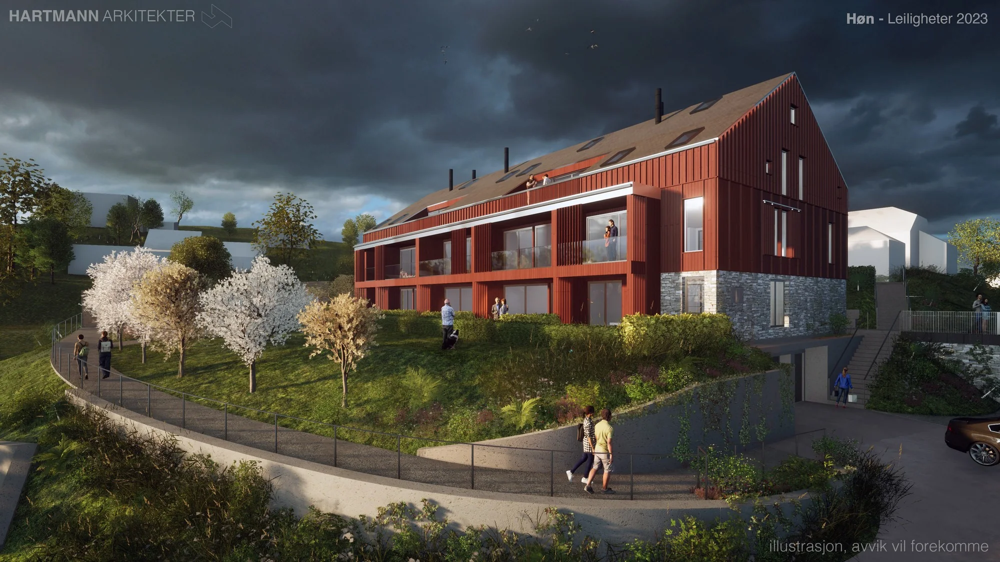

En ny hverdag.
En historie å ta vare på.
Vi utforsker hvordan gamle låver kan få nytt liv som boliger.

Se verdien i det
som allerede finnes.
Volumene, materialene og historien gir en låve et særpreg som er verdt å undersøke. Vi arbeider med løsninger som møter nye boligbehov og samtidig tar hensyn til bygningens karakter.
Mulighetene kan være en enebolig, flere boenheter eller en fritidsbolig. Utgangspunktet er alltid det konkrete bygget, tomten og rammene for prosjektet.
La oss se på mulighetene sammenVi tegner også
mellom husene.
Adkomsten, tunet og de grønne rommene er en del av arkitekturen. På Høn undersøkes en låveform med tolv leiligheter, felles garasjekjeller og utearealer med frukttrær og lekeplass.
En reguleringsplan knytter bygget til en større sammenheng. Områdets karakter, bruk og muligheter er utgangspunktet.
Se planarbeidet på Høn- Prosjekt
- Regulering for låve med leiligheter
- Sted
- Folabruveien, Høn
- Dokument
- Reguleringsplan
- Arkitekt
- Hartmann
Publisert prosjektfase: prosjektering, med godkjent rammetillatelse i 2024.